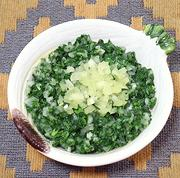

|
Salsa Verde - ChileanChile - Salsa Verde | ||||
| Makes: Effort: Sched: DoAhead: |
2/3 cup ** 25 min Yes |
Totally different from Mexican Salsa Verde. It was a winter version of Pebra, when Cilantro and Tomatoes were scarce. It's now used all year, particularly for sandwiches. | |||
|
|
3 1/2 1 1 1/3 |
oz c T t t |
Onion Parsley, flat Oil (1) Wine Vinegar, white Salt |
Make - (25 min)
|